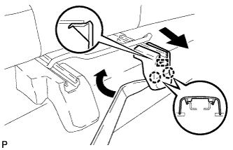
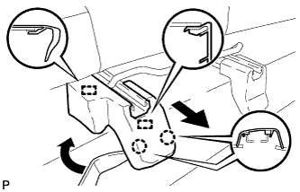
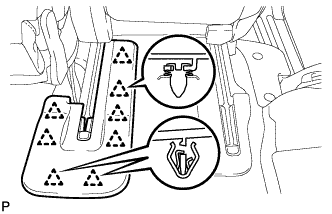
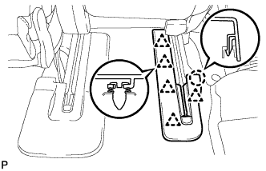
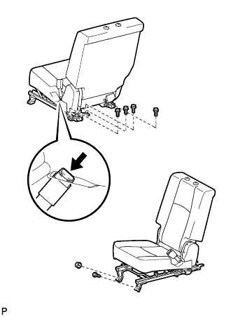

ЗАДНЕЕ СИДЕНЬЕ № 1 В СБОРЕ (выдвижное сиденье раздельного типа 60/40 с функцией облегчения посадки "Walk-in" с правой стороны) > СНЯТИЕ |
| 1. СНИМИТЕ ПОДГОЛОВНИК ЗАДНЕГО СИДЕНЬЯ В СБОРЕ |
Снимите подголовник.
| 2. СНИМИТЕ ЗАДНИЙ ЩИТОК КРОНШТЕЙНА ВНУТРЕННЕЙ НАПРАВЛЯЮЩЕЙ СИДЕНЬЯ |
|  |
С помощью съемника молдингов освободите 2 захвата и направляющую и снимите щиток.
| 3. СНИМИТЕ ЗАДНИЙ ЩИТОК КРОНШТЕЙНА НАРУЖНОЙ НАПРАВЛЯЮЩЕЙ СИДЕНЬЯ |
|  |
С помощью съемника молдингов расцепите 2 захвата.
Переместите щиток в направлении, указанном на рисунке стрелкой, чтобы освободить 2 направляющие, и снимите щиток.
| 4. СНИМИТЕ ЩИТОК КРОНШТЕЙНА ВНУТРЕННЕЙ НАПРАВЛЯЮЩЕЙ ПРАВОГО СИДЕНЬЯ |
|  |
С помощью съемника фиксаторов освободите 8 фиксаторов и снимите щиток.
| 5. СНИМИТЕ ПРАВЫЙ ЩИТОК НАПРАВЛЯЮЩЕЙ СИДЕНЬЯ |
|  |
С помощью инструмента для снятия фиксаторов расцепите 5 фиксаторов и захват и снимите щиток.
| 6. СНИМИТЕ ПРАВОЕ ЗАДНЕЕ СИДЕНЬЕ В СБОРЕ |
|  |
Отсоедините замок центрального ремня безопасности заднего сиденья от сиденья.
Выверните 5 болтов и отверните гайку.
Снимите заднее сиденье.